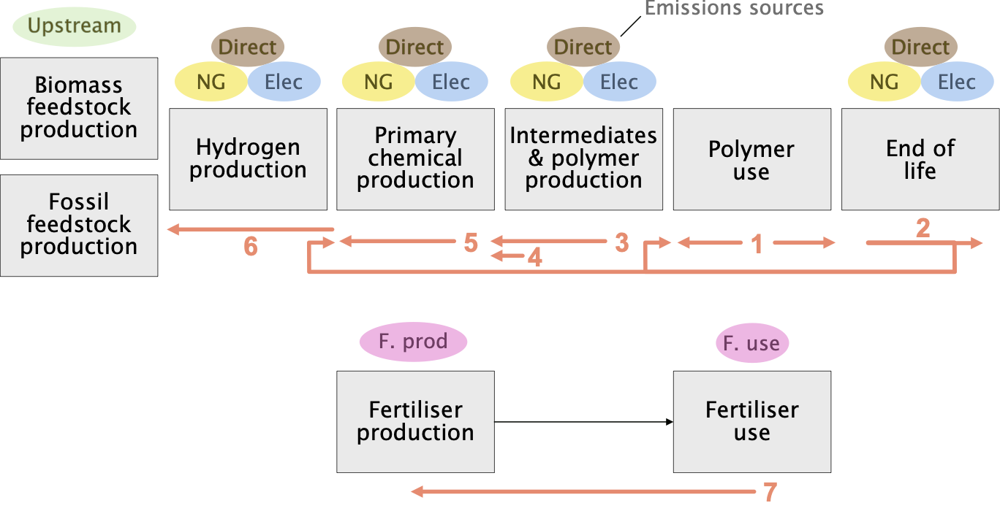

| Group | Process |
|---|---|
| biomass | CornStoverGasificationToSyngas |
| biomass | EthylAlcoholSynthesisFromCornStover |
| biomass | EthylAlcoholSynthesisFromMaize |
| biomass | EthylAlcoholSynthesisFromRiceStraw |
| biomass | EthylAlcoholSynthesisFromSugarcane |
| biomass | EthylAlcoholSynthesisFromSugarcaneBagasse |
| biomass | EthylAlcoholSynthesisFromWheatStraw |
| biomass | RiceStrawGasificationToSyngas |
| biomass | SugarCaneBagasseGasificationToSyngas |
| biomass | WheatStrawGasificationToSyngas |
| downstream | PolymerisationOfFibrePPA |
| downstream | PolymerisationOfHDPE |
| downstream | PolymerisationOfLDPE |
| downstream | PolymerisationOfLLDPE |
| downstream | PolymerisationOfOtherPolymers |
| downstream | PolymerisationOfPET |
| downstream | PolymerisationOfPP |
| downstream | PolymerisationOfPUR |
| downstream | PolymerisationOfPVC |
| downstream | PolymerisationOfPolystyrene |
| downstream | PolymerisationOfStyreneButadiene |
| end_of_life | ChemicalRecyclingOfMixedPolymersAtEOL |
| end_of_life | Incineration |
| end_of_life | Landfilling |
| end_of_life | MechanicalRecyclingOfFibrePPAAtEOL |
| end_of_life | MechanicalRecyclingOfHDPEPolyethyleneAtEOL |
| end_of_life | MechanicalRecyclingOfLDPEPolyethyleneAtEOL |
| end_of_life | MechanicalRecyclingOfLLDPEAtEOL |
| end_of_life | MechanicalRecyclingOfPETPolyethyleneTerephthalatePolyestersAtEOL |
| end_of_life | MechanicalRecyclingOfPPPolypropyleneAtEOL |
| end_of_life | MechanicalRecyclingOfPSPolystyreneAtEOL |
| end_of_life | MechanicalRecyclingOfPVCPolyvinylChlorideAtEOL |
| end_of_life | Mismanagement |
| green_hydrogen | WaterElectrolysisForHydrogen |
| organic_synthesis | AceticAcidSynthesis |
| organic_synthesis | AcrylonitrileSynthesis |
| organic_synthesis | AdipicAcidSynthesis |
| organic_synthesis | CyclohexaneSynthesis |
| organic_synthesis | EthyleneGlycolSynthesis |
| organic_synthesis | EthyleneOxideSynthesis |
| organic_synthesis | HexamethylenediamineSynthesisFromButadiene |
| organic_synthesis | HydrogenCyanideSynthesis |
| organic_synthesis | IsophthalicAcidSynthesis |
| organic_synthesis | OtherOrganicChemicalsSynthesis |
| organic_synthesis | PolyolsSynthesis |
| organic_synthesis | PropyleneOxideSynthesis |
| organic_synthesis | StyreneSynthesis |
| organic_synthesis | TerephthalicAcidSynthesis |
| organic_synthesis | TolueneDiisocyanateSynthesis |
| organic_synthesis | VinylChlorideSynthesis |
| other_hydrogen | NaturalGasSteamMethaneReformingToHydrogen |
| other_hydrogen | NaturalGasSteamMethaneReformingWithCCSToHydrogen |
| primary_production | CarbonDioxideHydrogenationToMethylAlcohol |
| primary_production | CatalyticReformingOfNaphthaForToluene |
| primary_production | CatalyticReformingOfNaphthaForXylenes |
| primary_production | CoalGasificationToSyngas |
| primary_production | DealkylationOfTolueneForBenzene |
| primary_production | DehydrationOfEthylAlcohol |
| primary_production | DehydrogenationOfButaneForButadiene |
| primary_production | DehydrogenationOfPropane |
| primary_production | DisproportionationOfTolueneForXylenes |
| primary_production | DistillationOfButylenesForButadiene |
| primary_production | DistillationOfPyrolysisGasolineForBTX |
| primary_production | FischerTropschSynthesisOfOlefinsFromSyngas |
| primary_production | FluidCatalyticCrackingOfGasOil |
| primary_production | MethylAlcoholSynthesis |
| primary_production | MethylAlcoholToAromatics |
| primary_production | MethylAlcoholToOlefins |
| primary_production | MethylAlcoholToPropylene |
| primary_production | NaturalGasSteamMethaneReformingToSyngas |
| primary_production | SodiumChlorideElectrolysisForChlorine |
| primary_production | SteamCrackingOfEthane |
| primary_production | SteamCrackingOfNaphtha |
| primary_production | SyngasToAmmoniaProduction |
3 Model logic
The model first calculates the operation of each process based on balancing mass flows (Section 3.1). From this, utility requirements (Section 3.2) are calculated, and hence emissions and other metrics are calculated (Section 3.3).
3.1 Mass-flow process model

The processes described in Chapter 2 need to be deployed in suitable combinations to meet demand within the available supply and/or capacity constraints. Generally, there are multiple ways that this could plausibly happen, especially when there are multiple technologies available to produce the same chemical. The model “logic” sets out the mass-flow solutions corresponding to particular choices of model parameters (such as capacities or feedstock shares). This builds up the final pattern of process operation and mass flows step by step, as illustrated in Figure 3.1 and described below:
Determine demand and end-of-life flows of polymers from the stock model (see Chapter 7).
Allocate end-of-life polymers to mechanical recycling or chemical recycling based on the recycling rate parameters, with the residual allocated to final treatment options (see Chapter 8, Chapter 9).
Determine required primary chemicals to satisfy the remaining demand for polymers that is not already covered by mechanical recycling. Mechanical recycling is assumed to perfectly substitute virgin polymer production.
Add in additional demand for primary chemicals to non-polymer applications (see Chapter 10).
Produce primary chemicals in turn using preferred routes first, until their capacity has been exhausted. First, ethylene demand is satisfied:
- Ethylene is produced from biomass via ethyl alcohol, where capacity is available (see Chapter 13).
- Ethylene is produced from methyl alcohol (methanol), where MTO capacity is available (see Chapter 11).
- Any residual demand for ethylene is produced from steam cracking of fossil naphtha and ethane (see Chapter 16).
These processes produce benzene, toluene, and xylenes (BTX) as by-products; if further demand for BTX remains, then it is satisfied as follows:
- Demand for xylenes is satisfied from methyl alcohol, where MTA capacity is available (see Chapter 12).
- Excess toluene production is converted to xylenes by disproportionation.
- Remaining demand for BTX is produced via catalytic reforming of naphtha, with dealkylation and disproportionation used to balance the mix of BTX as far as possible.
Finally, on-purpose production of propylene and butadiene is deployed if insufficient supply has already been produced as by-products above:
- Propylene is produced from methanol (MTP) is additional capacity is still available (see Chapter 11), falling back on dehydrogenation of propane.
- Butadiene is produced from distillation of excess butylenes supply as co-product of previous processes, if available, falling back on dehydrogenation of butane.
Now upstream production is determined, starting with supply of methyl alcohol:
- Methyl alcohol is produced from green hydrogen when capacity is available (see Chapter 17).
- Any remaining demand for methyl alcohol is produced from syngas, as below.
Syngas is produced from biomass or fossil feedstocks:
- Syngas is produced from gasification of crop residues where capacity is available (see Chapter 14).
- Any remaining demand for syngas is produced from natural gas and coal.
Remaining demand for hydrogen is produced via green (Chapter 17), blue (Chapter 17), and grey routes in order of preference, up to capacity limits.
Fossil paraffins are sourced from oil refining.
Separately, fertiliser use is determined according to the scenarios of Gao and Cabrera Serrenho (2023) (see Chapter 4, Chapter 5, Chapter 6).
Overall, this model logic ensures that any setting of the demand and production capacity parameters results in a pattern of process deployment that is mass balanced and broadly technically plausible, considering the mix of process co-products and routes, even when demand patterns change dramatically and assumptions about allocation factors of chemicals to applications are no longer valid.
3.2 Utility requirements
Utility requirements (natural gas and electricity) are calculated for each process by multiplying the process operation, calculated from the mass flow logic above, with utility requirement parameters (see Chapter 22, Chapter 23).
3.3 Emissions calculation
Emissions from electricity use are based on the parameter EF_Utility_Electricity (see Chapter 24), with one exception: electricity used for green hydrogen production is assumed to be always supplied by low-carbon electricity at an emissions factor of 7 gCO2e/kWh (Meys et al. 2021).
Emissions from natural gas use are based on the parameter EF_Utility_NaturalGas (see Chapter 25), reduced by a combustion emissions abatement factor (see Chapter 21).
Emissions from process reactions are based on emissions factors for CO2, CH4 and N2O (see Chapter 26, Chapter 28), converted to GWP using IPCC AR5 factors of 1, 28 and 265 respectively. Emissions are reduced by a direct process emissions abatement factor (see Chapter 20), with two exceptions: end-of-life incineration emissions abatement is controlled by a separate lever (Chapter 19), and emissions from end-of-life ‘mismanagement’ are never abated.
The total quantity of emissions abatement capacity that has been used is accumulated and reported as an additional model output.
Upstream emissions associated with feedstock production are calculated using emissions factors (see Chapter 27).
Finally, processes are grouped according to Table 3.1 for reporting emissions totals.
Emissions from fertiliser production are calculated directly from the production quantity of each fertiliser type (see Chapter 4), and production & use-phase emissions factors (see Chapter 5, Chapter 6).